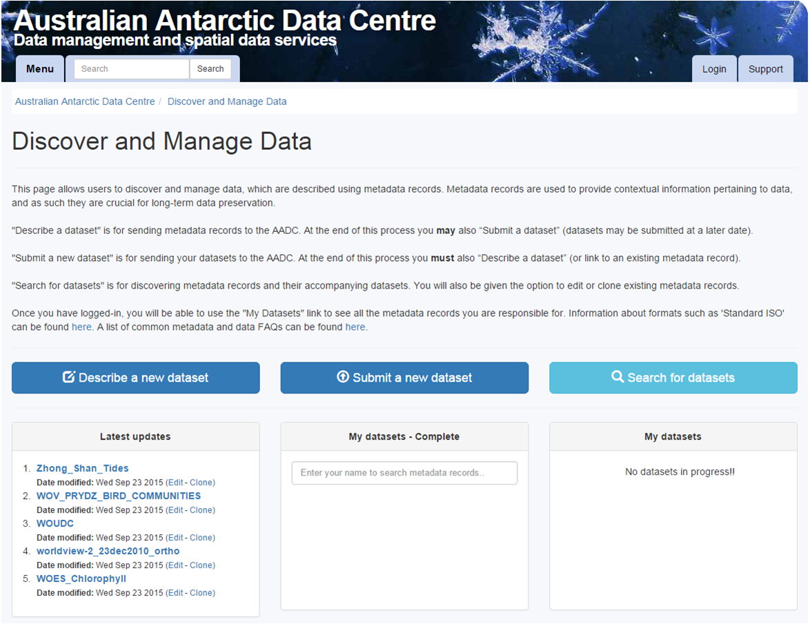
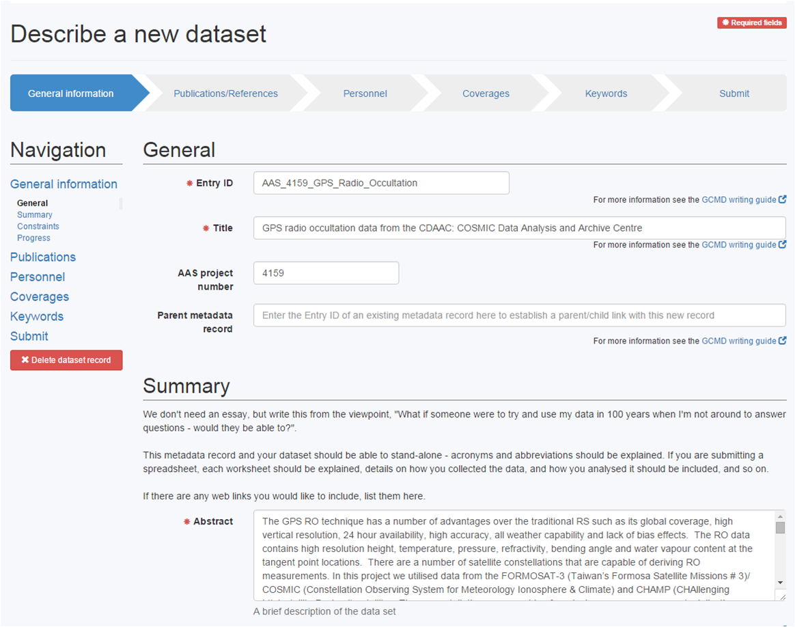

http://www.antarctica.gov.au/science
7-ish staff:
Metadata focus
Associated data
Add value, maintain capability
http://data.aad.gov.au/aadc/about/data_policy.cfm
first milestone: what data, when?
flags for:
initial reluctance to engage in open data
ongoing change, wider buy-in
ensuring data support for our scientists
credit for data contributions: DOIs, data papers
assistance and advice, collaboration:
predator diets http://data.aad.gov.au/aadc/trophic
animal tracking data from 1980's onwards
satellite-derived and similar environmental data
derived layers for modelling
used across multiple projects
R packages
attached to cloud-compute, shared via biodiversity.aq
early on = ANZLIC standard, now = DIF
GCMD provides all metadata services for AADC
AADC retains metadata officer control of records and local copies of metadata records
integration
contribution to other GCMD portals
conversion to other formats for harvesting
buy-in from users requires a friendly authoring tool
authoring process is broadly:
ANZLIC/DIF tools not well regarded by average user: not intuitive, technical terminology
from 2012, simple Word template with 8 questions
own metadata authoring tool


bespoke development including fundamental frameworks, diverse applications
tools, opportunities, community, collaborations
expectations on data centre services
republishing of AADC data
expectations of staff wishing to be part of open community